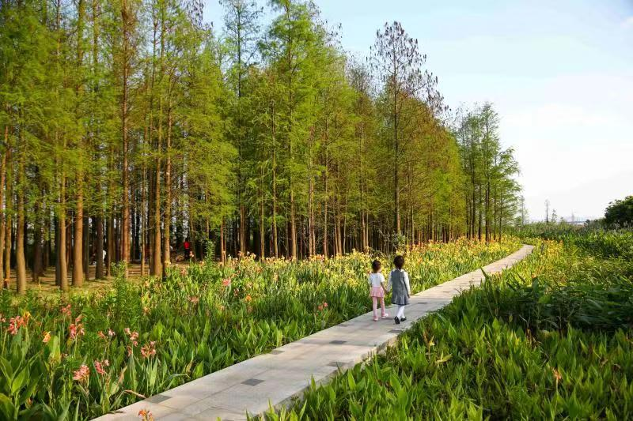

社会各界人士、广大市民朋友：
春日清风，植树良辰，迎接绿意，时序正当。为大力倡导文明健康绿色环保生活方式，推动大地植绿、全民享绿成为文明新风尚。在2024年春日来临之际，我们诚挚邀请您参与“传递文明，齐绘绿美井岸”认种认捐全民义务植树活动，在此，我们热切地向大家发出倡议：

以主人翁的姿态踊跃参与，当好生态文明建设的义务宣传者，积极宣传植绿护绿、保护环境、低碳生活和善待自然的重要意义，倡导树立文明新风，在全社会营造植树护绿良好氛围。
迅速行动起来，通过栽植树木、抚育管护、自然保护、认种认养、设施修建、捐资捐物、志愿服务等方式，积极参加到各种形式的义务植树和造林绿化活动中来，亲手栽下一棵树，亲手植下一片绿。提倡“有喜事，来种树”，积极鼓励有出生、生日、进宅、升学、晋升、店铺开张、企业投产等喜事的集体、家庭或个人，到井岸镇各植树造林点义务种植“希望树”“幸运树”“升学树”“理想树”“友谊树”“事业树”；广泛参与到“巾帼林”“青年林”“企业林”等各类主题林营建，实际行动为文明井岸添美添绿；主动将房前屋后的闲置空地利用起来，开展“四小园”建设，见缝插绿、见缝种花，共同打造一个个为乡村增香、增色、增美的小菜园、小花园、小果园。
一花一草皆生命，一枝一叶总关情。我们要像保护眼睛一样保护生态环境，要像对待生命一样对待生态环境。多种一棵树，多植一片草，关注生态环境，关爱绿色生命，自觉保护身边的一草一木，不侵占绿地林地，不践踏草坪，不攀摘树枝花朵；自觉管好各自房前屋后卫生，不乱搭建、不乱堆放；严格遵守森林防火规定，制止破坏生态的不良行为，共同保卫我们的绿色家园。
人不负青山，青山定不负人。市民朋友们，春日将至，百草从时，井岸这座美丽的城镇迎来了万物复苏的绿春，让我们携起手来，积极以各种方式参与到绿美井岸义务植树行动中，通过共同努力，为井岸的自然之美添绿增色，为共建人与自然和谐共生的井岸打造更为美好的典范，贡献我们更大的力量。
认种认捐方式：